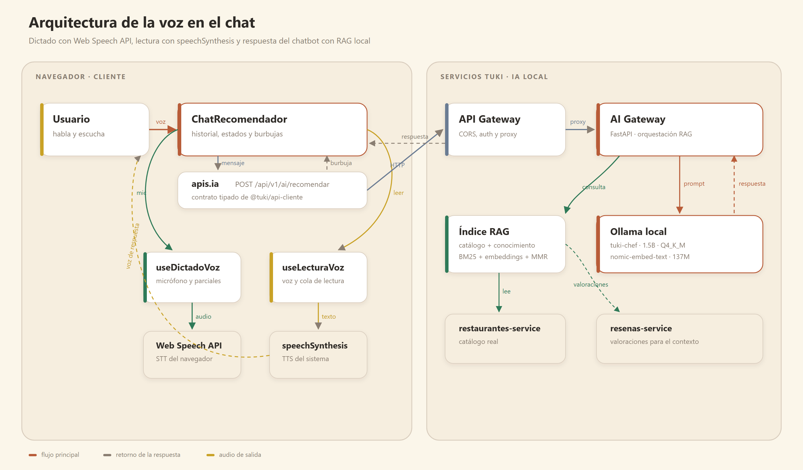
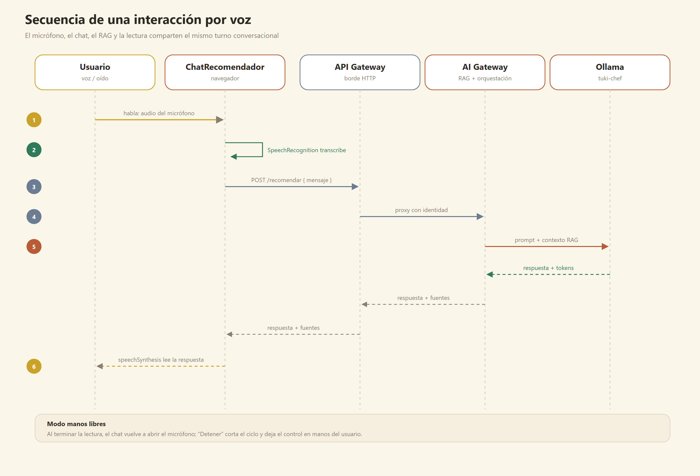
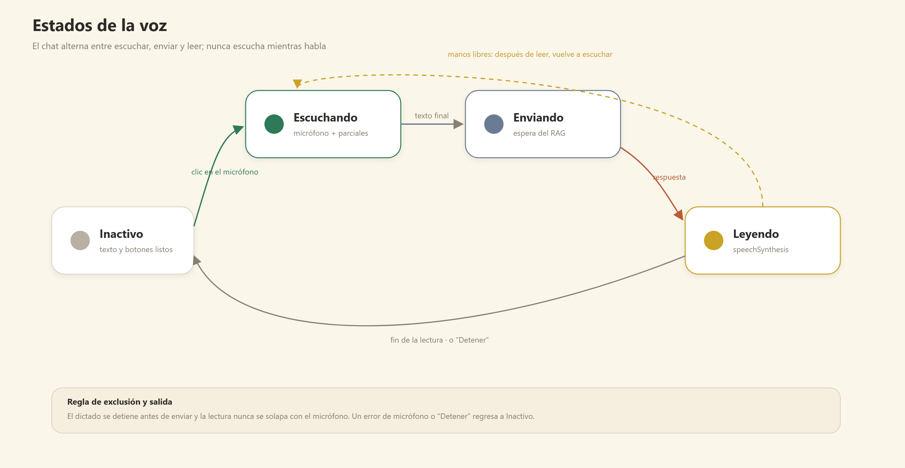
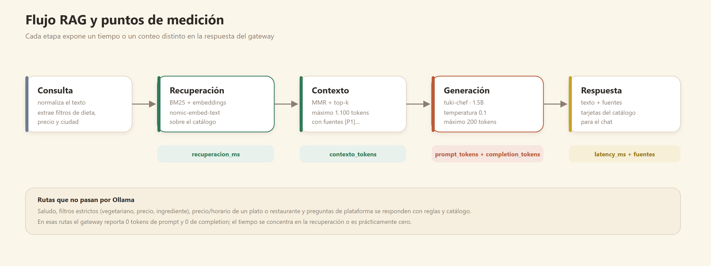
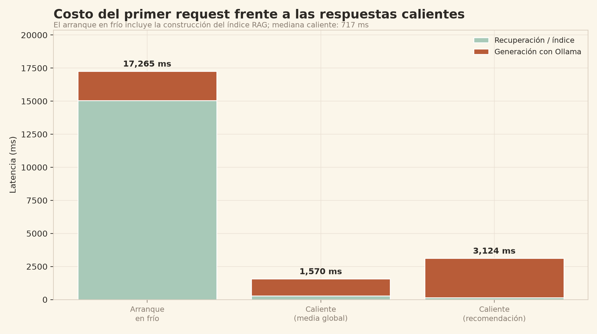
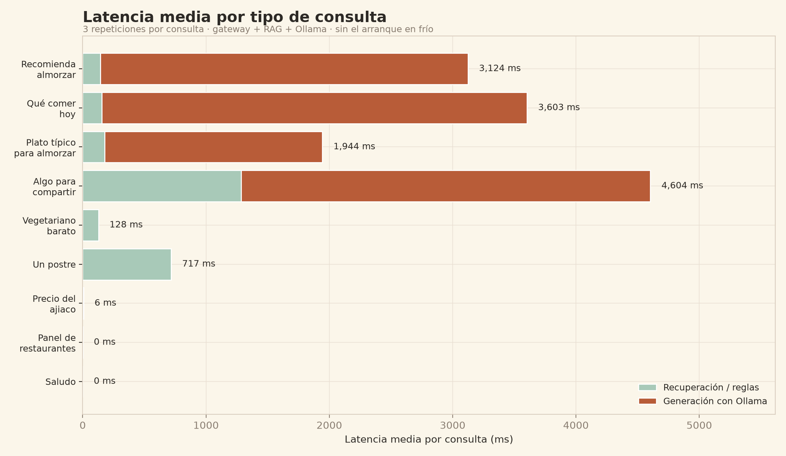
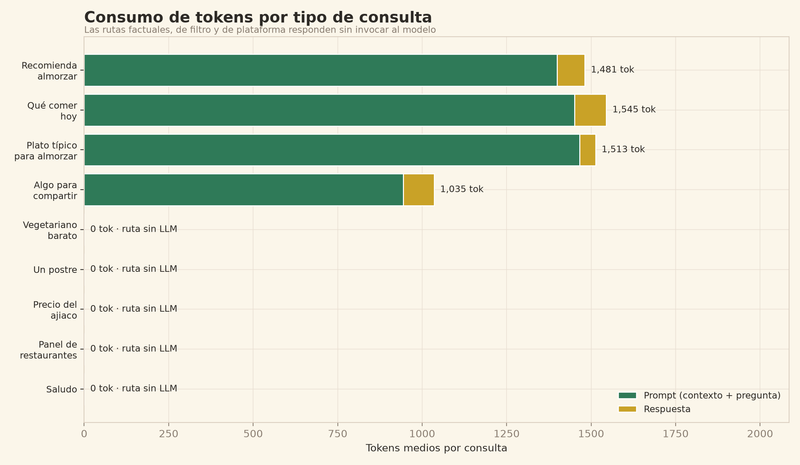
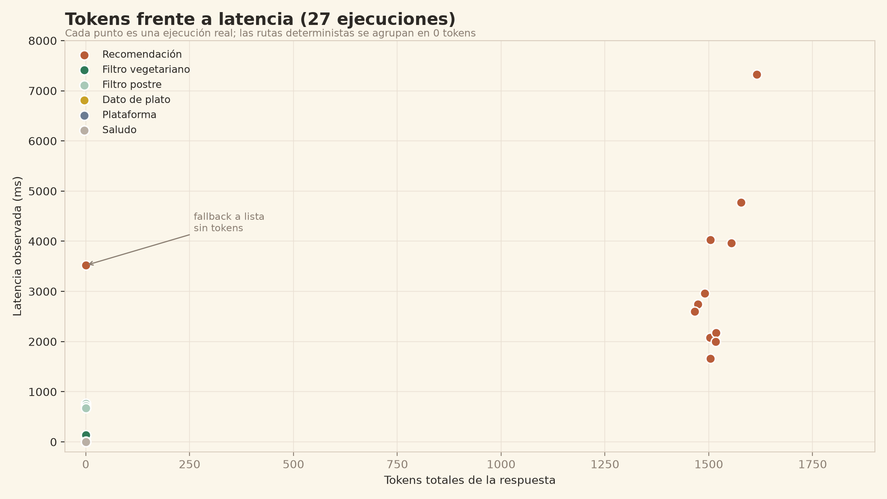
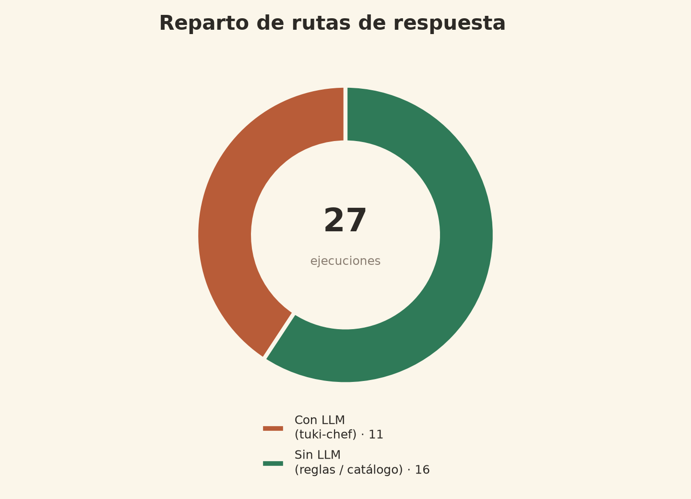

Versión PDF: voz-chat-metricas.pdf
Alcance: este documento cubre únicamente la implementación de voz del chat y la medición real de tokens y tiempos del chatbot. No describe otras funcionalidades de TukiTuki.
Fecha de medición: 25 de noviembre de 2026, 14:54 (UTC−5).
El chat de web-comensal ahora permite hablarle a Tuki,
leer sus respuestas y mantener un modo manos libres. La inteligencia
sigue siendo el mismo chatbot de texto con RAG sobre el catálogo real:
la voz se resuelve en el navegador y no agrega llamadas al gateway.
| Control | Comportamiento |
|---|---|
| Micrófono | Inicia el dictado con SpeechRecognition en
es-CO. Muestra la transcripción parcial y entrega el texto
final al chat. |
| Altavoz | Activa o desactiva la lectura automática de las respuestas. La
preferencia se guarda en localStorage con la clave
tuki-chat-leer. |
| Ondas | Activa el modo manos libres: al terminar de dictar se envía solo, la respuesta se lee y, al terminar la lectura, el micrófono se vuelve a abrir. |
| Escuchar | Lee una respuesta concreta de Tuki con
speechSynthesis. |
| Repetir | Vuelve a leer el mensaje que escribiste o dictaste. |
| Detener | Corta el dictado o la lectura y desactiva el ciclo de manos libres. |
packages/experiencia-tuki/src/componentes/chat/voz.ts
useDictadoVoz: micrófono, parciales, texto final,
errores y limpieza.useLecturaVoz: voces del sistema, selección de la mejor
voz española, limpieza del texto y cola de lectura.limpiarParaLeer: quita citas [P1],
enlaces, marcas de Markdown y emojis antes de hablar.packages/experiencia-tuki/src/componentes/chat/ChatRecomendador.tsx
apis.ia.recomendar, sin cambios en el
contrato del backend.packages/api-cliente/src/ai.api.ts
{ mensaje, historial } y
devolviendo la respuesta y las fuentes.SpeechRecognition.Inactivo.SpeechRecognition no está disponible.localhost o HTTPS.pnpm typecheck, pnpm test y
pnpm build pasan sin errores.SpeechRecognition simulado se comprobó el flujo
completo: transcripción → envío → respuesta → estado de lectura.
La arquitectura separa tres responsabilidades:
ChatRecomendador coordina la interfaz;
useDictadoVoz y useLecturaVoz encapsulan los
navegadores.apis.ia llama a /api/v1/ai/recomendar a través
del API Gateway.
SpeechRecognition.ChatRecomendador envía el mensaje al API Gateway.tuki-chef.speechSynthesis lee la respuesta si la lectura está
activa.
El chat pasa por Inactivo, Escuchando,
Enviando y Leyendo. Antes de enviar se detiene
el micrófono; antes de leer se cierra el reconocimiento. En manos
libres, el final de la lectura dispara un nuevo turno de escucha.

| Etapa | Campo medido | Qué representa |
|---|---|---|
| Recuperación | recuperacion_ms |
Búsqueda híbrida BM25 + embeddings, filtros y selección de candidatos. |
| Contexto | contexto_tokens |
Tokens estimados del contexto que se envía al modelo. |
| Generación | prompt_tokens, completion_tokens,
total_tokens |
Tokens de entrada y salida reportados por Ollama. |
| Respuesta | latency_ms y fuentes |
Tiempo total del gateway y cantidad de platos/restaurantes citados. |
Las rutas de saludo, filtros estrictos, precio/horario de un plato o restaurante y preguntas de plataforma responden con reglas y catálogo, sin invocar a Ollama. En esas rutas los tokens son cero y el tiempo se concentra en la recuperación o es prácticamente nulo.
| Elemento | Valor |
|---|---|
| Equipo | Intel Core i5-13420H, 8 núcleos / 12 hilos |
| Memoria | 16 GB |
| GPU | Intel UHD integrada, sin CUDA |
| Sistema | Windows 11 Pro, build 26300 |
| Docker | 29.9.3 |
| Modelo de chat | tuki-chef (Qwen2.5 1.5B, Q4_K_M) |
| Embeddings | nomic-embed-text (137M) |
| Endpoint medido | http://localhost:8084/api/v1/ai/recomendar |
| Autenticación | Cuenta demo de comensal (cliente@tukituki.local) |
localhost:11434.tukituki-ai-gatewaybe para medir el
arranque en frío.wall_ms)
para separar el costo del gateway del costo interno.| # | Consulta | Ruta esperada |
|---|---|---|
| 1 | ¿Qué me recomiendas para almorzar? | Generativa con RAG |
| 2 | ¿Qué puedo comer hoy? | Generativa con RAG |
| 3 | Recomiéndame un plato típico para almorzar | Generativa con RAG |
| 4 | Busco algo delicioso para compartir | Generativa con RAG |
| 5 | Algo vegetariano y barato | Filtro estricto, sin LLM |
| 6 | Quiero un postre | Filtro de sabor, sin LLM |
| 7 | ¿Cuánto cuesta el Ajiaco Bogotano? | Dato factual, sin LLM |
| 8 | ¿Cómo funciona el panel de restaurantes? | Plataforma, extractiva |
| 9 | Hola | Saludo directo |
generacion_ms = max(0, latency_ms − recuperacion_ms).wall_ms es el tiempo del cliente e incluye el viaje
HTTP; la diferencia con latency_ms es el costo del
borde.Se analizaron 27 ejecuciones calientes y 1 ejecución en frío, sin errores en la corrida final.
| Métrica | Valor |
|---|---|
| Ejecuciones calientes | 27 |
| Latencia media | 1.569,5 ms |
| Latencia mediana | 717 ms |
| Latencia p95 | 4.548,8 ms |
| Latencia mínima | 0 ms |
| Latencia máxima | 7.327 ms |
| Tiempo de recuperación medio | 290,3 ms (18,5 % del total) |
| Tiempo de generación medio | 1.279,2 ms |
| Tiempo de pared medio del cliente | 1.583,5 ms |
| Costo del borde HTTP | ≈14 ms |
| Tokens totales | 16.724 |
| Tokens de prompt | 15.780 |
| Tokens de completion | 944 |
| Tokens medios por ejecución | 619,4 |
| Tokens medios por ejecución con LLM | 1.520,4 |
| Prompt medio con LLM | 1.434,5 tokens |
| Completion medio con LLM | 85,8 tokens |
| Ejecuciones con LLM | 11 de 27 |
| Ejecuciones sin LLM | 16 de 27 |
| Escenario | Latencia | Recuperación | Generación | Tokens |
|---|---|---|---|---|
| Primer request tras reiniciar el gateway | 17.265 ms | 15.040 ms | 2.225 ms | 1.459 |
| Media caliente global | 1.569,5 ms | 290,3 ms | 1.279,2 ms | 619,4 |
| Media caliente de recomendación | 3.124 ms | 144,3 ms | 2.979,7 ms | 1.481,3 |
El arranque en frío cuesta 11 veces la media caliente. La mayor parte es la construcción del índice RAG (15,0 s); la generación en sí fue de 2,2 s.

| Consulta | n | Latencia media | Recuperación | Generación | Prompt | Completion | Total | Fuentes |
|---|---|---|---|---|---|---|---|---|
| ¿Qué me recomiendas para almorzar? | 3 | 3.124 ms | 144 ms | 2.980 ms | 1.399 | 82 | 1.481 | 5,0 |
| ¿Qué puedo comer hoy? | 3 | 3.603 ms | 155 ms | 3.448 ms | 1.451 | 94 | 1.545 | 5,0 |
| Recomiéndame un plato típico para almorzar | 3 | 1.944 ms | 179 ms | 1.765 ms | 1.466 | 47 | 1.513 | 5,0 |
| Busco algo delicioso para compartir | 3 | 4.604 ms | 1.284 ms | 3.320 ms | 944 | 91 | 1.035 | 4,7 |
| Algo vegetariano y barato | 3 | 128 ms | 128 ms | 0 ms | 0 | 0 | 0 | 4,0 |
| Quiero un postre | 3 | 717 ms | 716 ms | 0 ms | 0 | 0 | 0 | 4,0 |
| ¿Cuánto cuesta el Ajiaco Bogotano? | 3 | 6 ms | 6 ms | 0 ms | 0 | 0 | 0 | 1,0 |
| ¿Cómo funciona el panel de restaurantes? | 3 | 0,3 ms | 0,3 ms | 0 ms | 0 | 0 | 0 | 0,0 |
| Hola | 3 | 0 ms | 0 ms | 0 ms | 0 | 0 | 0 | 0,0 |
En “Busco algo delicioso para compartir”, una de las tres ejecuciones cayó a la lista factual después de invocar al modelo; el gateway no conserva los tokens de esa llamada fallida. Por eso el promedio de tokens de esa fila es más bajo que el de las otras recomendaciones.




# 1. Levantar el stack y verificar Ollama
docker compose -f infra/docker/docker-compose.yml up -d
# 2. Medir (reiniciar el gateway antes para capturar el arranque en frío)
docker restart tukituki-ai-gatewaybe
python docs/entrega/chat-voz/medicion/medir_chatbot.py
# 3. Generar gráficas y resumen
python docs/entrega/chat-voz/medicion/graficar_metricas.pyArtefactos:
medicion/datos/resultados.json: cada ejecución con
respuesta, tokens, tiempos y fuentes.medicion/datos/resultados.csv: la misma tabla para hoja
de cálculo.medicion/datos/resumen.json: agregados usados en este
documento.medicion/graficas/: las cinco gráficas en PNG a 200
dpi.La voz quedó resuelta como una capa de interfaz sobre el chatbot existente: el micrófono transcribe, el RAG responde y el navegador lee. Es una solución multimodal de bajo costo, sin modelos adicionales y sin cambiar el backend.
Las métricas muestran un chatbot usable en caliente, con una mediana de 717 ms y respuestas deterministas casi inmediatas, pero con dos puntos claros de mejora: precalentar el índice RAG para eliminar los 17 s del primer request y reducir el prompt para bajar el costo y la latencia de las recomendaciones generativas.